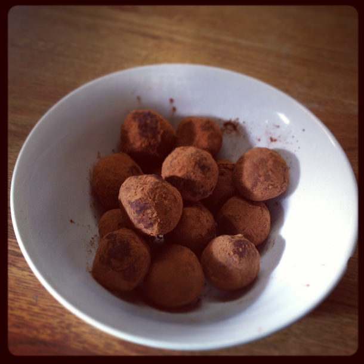

Honey Truffle Recipe

Description
Honestly I don't know what to put here.
I vaguely remember liking these as a kid, so I tried
googling for the recipe and was surprised that I was able to find
it. Kind of obscure, but I figured it would work for this
Ingredients
- 1/2 cup peanut butter
- 1/2 cup honey
- 1/2 cup confectioner's sugar
- 1/2 teaspoon vanilla extract
- Milk chocolate morsels
- 1/4 cup sweet cocoa
Steps
- Make sure the peanut butter and honey are
at room temperature.
- Mix the peanut butter, honey, and vanilla extract
until all the ingredients are blended smooth.
- Continue to mix the ingredients while gradually
adding the confectioner's sugar a bit at a time until
it's all blended smooth.
- Chill in the refrigerator for 30 minutes or until the dough
has slightly stiffened.
- Place the sweetened cocoa in another small bowl.
- Use a teaspoon to scoop out a bit of dough, place 2 or 3
milk chocolate morsels in the center, and roll it into
a ball.
- Drop the ball of dough into the bowl of cocoa and roll
it around until it is completely coated.
- Repeat the previous two steps until all the dough
has been used up.
- Place the truffles on a plate and keep them in the
refrigerator for 2 hours or until the truffles have
slightly hardened.